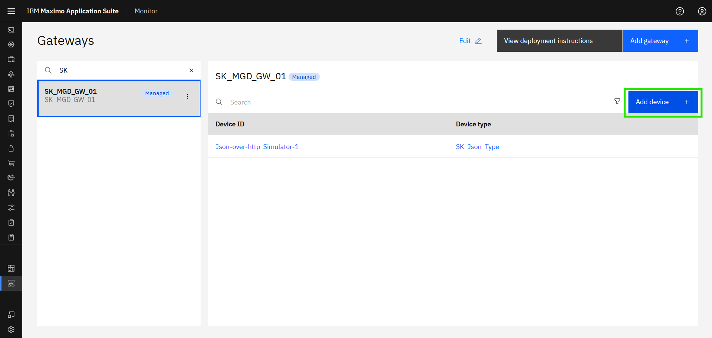
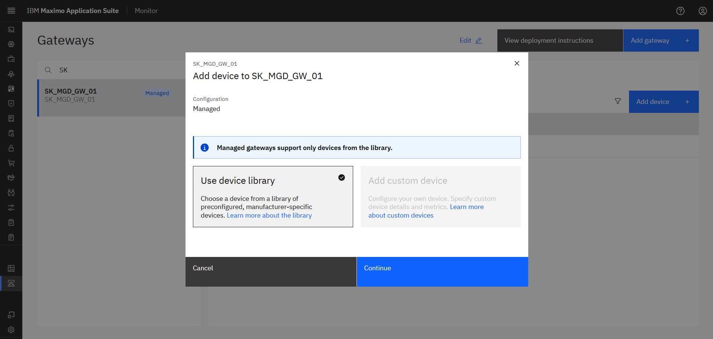
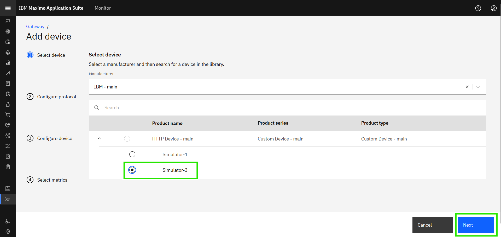
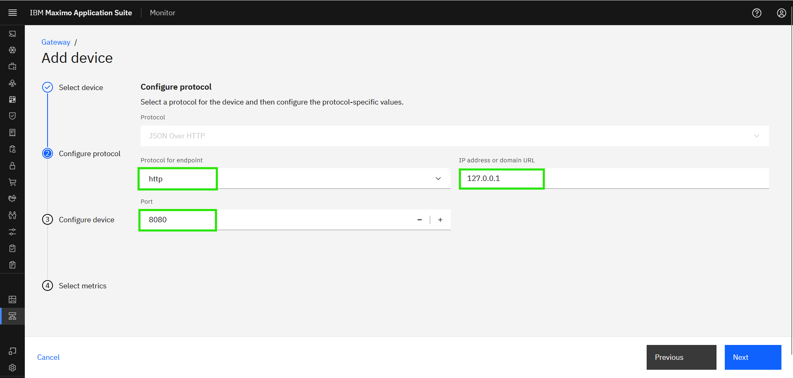
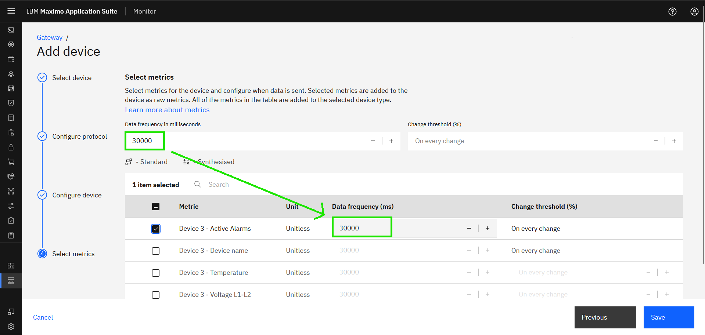
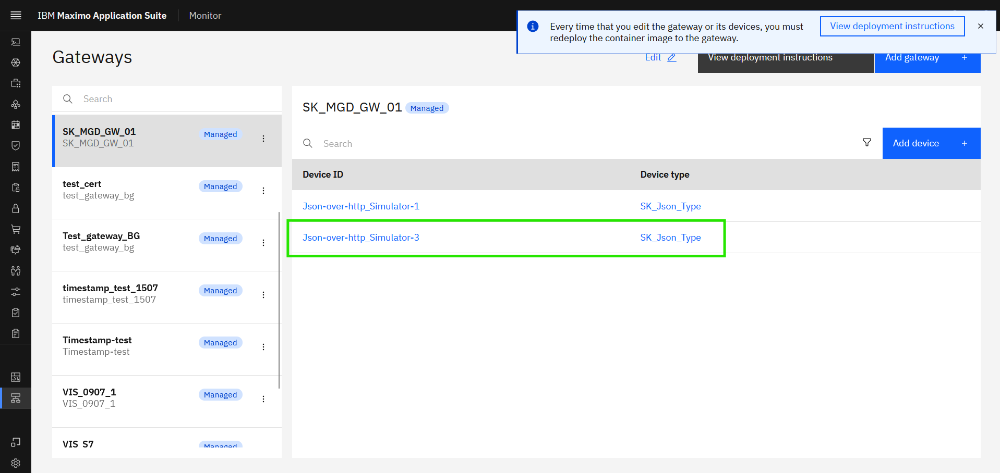

Objectives
In this Exercise you will learn how to add a second simulator device to the Managed Gateway.
Before you begin:
This Exercise requires that you have:
- completed the pre-requisites required for all labs
- completed the previous exercises
Filter to find and select your Gateway
- select it and you should also see devices handled by your Managed Gateway:

In the Managed Gateway click on Add device:

The Use device library will automatically be selected, as a Managed Gateway only supports devices from the library. Simply click on Continue:

{kind=link}
Note
The type of gateway defines which types of devices that can be added to the gateway. This is automatically handled by Monitor. Managed Gateway: OT devices from the device library. Standard/Privileged Gateway: IoT devices are added as custom devices.
It is time to add the Json simulator-3 device.
Search for IBM in the manufacurer drop-down and select it. Click Next:

Select the HTTP Device - main product, choose Simulator-3 and click on Next:

Select the http protocol for endpoint:
Tip
The simulator is running in our local machine at http://localhost:8080 or http://127.0.0.1:8080 .
Now it is time to use the IP address of the simulator and port number 127.0.0.1, 8080.
Click on Next;

Tip
Context path of the URL should be added to the datapoints in the endpoint column during CSV upload.
Define the Device ID as Json-over-http_Simulator-3.
You can see the Product Type as Custom Device, i.e. The product type of all the custom device added to the device library.
Click on the Device type and you should see this:

You can either select the old device type or create new Device Type:
Click on the XX_Json_Type and click Next:

Tip
You can select your own Device Type from the drop-down list once you have created it.
Define the Data frequency to 30000 (30 seconds) and it will automatically be used when you select the metrics: 
Select all the Metrics. Click Save:

You will now see your 2nd device being a part of your Managed Gateway: 
Congratulations you have successfully added another simulator device to your Managed Gateway.